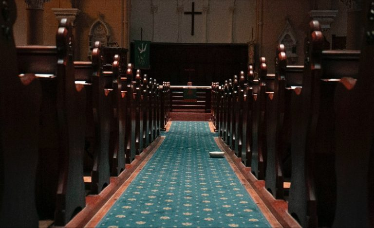

Confessions of a Critical Arts Practice (2020)
Kate O'Boyle
Confessions of a critical arts practice, documents a series of confessions made to Catholic priests about my attempts to engage in institutional critique. Raised Catholic, I experienced latent feelings of guilt as my practice took an increasingly critical stance towards the Church. What began as a sudden impulse to seek out some priestly advice, resulted in a year-long undertaking that saw me travel across Australia, seeking out absolution.
What remains of my time in the confessional booth are hours of audio documenting my confessions. While the priests and I sat divided by the infamous grille, we managed to engage in discussions about the place of contemporary art in the Church, the differences between ethics and sin, and the contemporary Church’s stance on institutional critique.

'Confessions of a Critical Arts Practice', 2020 (Detail), Image Courtesy the Artist